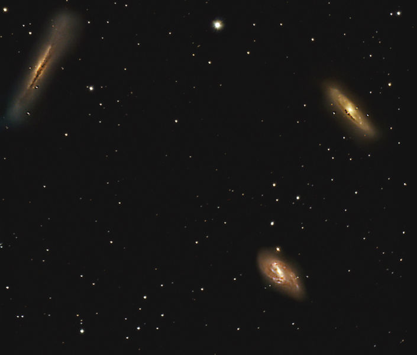

Part of the Leo Triplet. Magnitude 8.5. Class SBa. 32 million ly away.
M65 is much less active than the nearby M66. M66 is only 1/3° to the east of M65. If thay are at the same distance, the galaxies are only 200,000 ly apart.
The third galaxy in the Leo Triplet is NGC3628. In the image below, M65 is on the right, M66 on the bottom and NGC3628 on the left.

Image Credit: NASA/STScI/WikiSky
Image Credit: Scott Anttila.